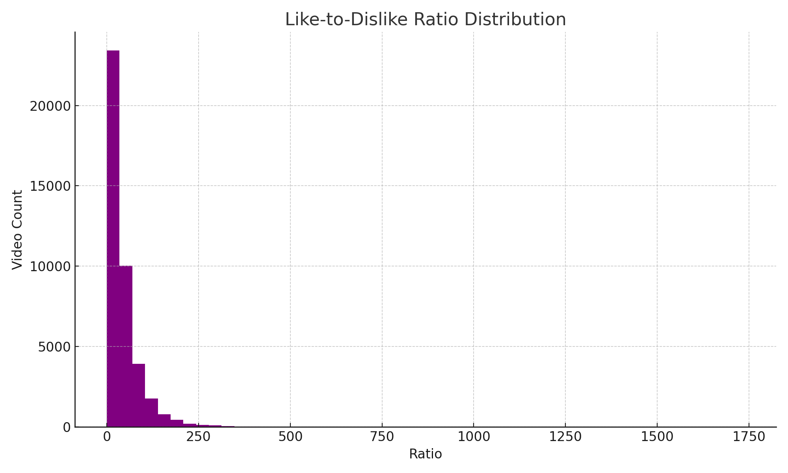
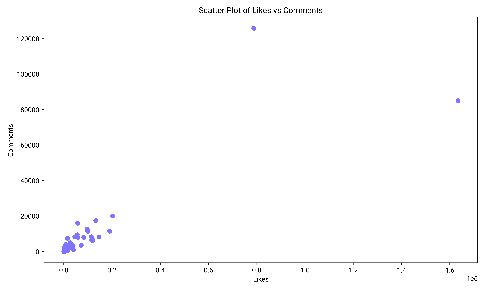

Executive Summary
This comprehensive analysis examines YouTube video performance metrics using data from Kaggle's YouTube dataset. The study investigates the relationships between engagement metrics, content characteristics, and viewing patterns to identify key success factors in content creation and distribution. Through statistical analysis and data visualization, we aim to uncover patterns that could predict video performance.
Research Questions and Hypotheses
The primary hypothesis driving this research was that through comprehensive data analysis, we can identify patterns that predict video success or failure on YouTube. Specifically:
Primary Hypothesis
Using data analysis techniques on historical YouTube video performance, we can make reliable inferences about which videos are likely to succeed or fail based on measurable characteristics and patterns.
Secondary Research Questions
- What correlation exists between different engagement metrics (views, likes, comments)?
- How do specific keywords in titles impact video performance?
- What patterns emerge in the distribution of likes versus dislikes?
- How does timing of publication affect video performance?
Methodology and Technical Implementation
Data Acquisition and Processing
The dataset was obtained from Kaggle's YouTube data repository (https://www.kaggle.com/datasets/datasnaek/youtube-new). Initial processing involved cleaning and formatting to ensure consistency and usability.
Technical Tools and Implementation
The analysis utilized a comprehensive suite of Python-based data science tools:
- Python programming language for core analysis
- Pandas for data manipulation and analysis
- NumPy for numerical computations
- Matplotlib and Seaborn for visualization
- Jupyter Notebooks for interactive development
Implementation was supported by various YouTube data science tutorials and community resources, providing guidance on visualization techniques and statistical analysis best practices.
Key Findings
1. Keyword Impact Analysis
.png)
Analysis of keyword correlations with engagement metrics reveals:

- Strong positive correlations between entertainment/music keywords and engagement
- Highest correlation for trending topics (e.g., 'aot')
- Consistent performance of platform-specific terms
2. Engagement Distribution
.png)
Analysis of likes and comments distribution shows:
- Most videos receive 0-200k engagements
- Rare cases exceed 1.5M likes
- Lower comment rates compared to likes, indicating viewer preference for simple engagement
3. View Count Distribution
.png)
View count analysis reveals:
- Power-law distribution in performance
- Top performers reaching 30M+ views
- Logarithmic decline in view counts
- Title structure influencing performance
4. Like-to-Dislike Ratio

Distribution analysis shows:
- Most videos maintain ratios between 0-250
- Sharp decline after initial peak
- Extreme ratios (>1000) indicating exceptional content
1. Likes vs Comments Correlation Analysis
This scatter plot reveals several key insights about viewer engagement:
- Most videos cluster in the lower range (0-20,000 comments, 0-200,000 likes), showing typical engagement patterns
- There are clear outliers with extremely high engagement (over 120,000 comments)
- A positive correlation exists between likes and comments, but it's not perfectly linear
- The spread becomes wider as the number of likes increases, suggesting more varied comment behavior on popular videos
2. Temporal Engagement Patterns

The temporal analysis graph shows critical patterns in how timing affects video performance:
- Views (purple line) show a sharp increase from hourly to daily metrics, then stabilize
- Comment counts (light blue) start high during initial hours but show a gradual decline before rising again monthly
- Like patterns (blue) show steady growth over longer time periods
- The intersection points between metrics suggest optimal engagement windows
Learning Journey and Technical Implementation
The journey to analyze this YouTube dataset was both challenging and enlightening. Initially, finding the right tools proved to be a significant hurdle. Through extensive research and YouTube tutorials, I discovered that Python's data science ecosystem would be ideal for this analysis. I spent considerable time watching tutorials from channels like "Python Programmer," "Data Science Dojo," and various coding tutorials that helped me understand how to effectively use libraries like Pandas and Matplotlib.
The learning curve was steep, especially when it came to data visualization. I had to learn how to clean data effectively, handle missing values, and create meaningful visualizations. YouTube proved to be an invaluable resource - watching other data scientists work through similar problems helped me understand the practical application of these tools. I learned about correlation analysis, data cleaning techniques, and how to create effective visualizations that tell a story.
One particularly challenging aspect was figuring out how to handle such a large dataset efficiently. The YouTube tutorials helped me understand concepts like data chunking and efficient memory usage. I discovered techniques for processing large datasets without overwhelming my computer's resources, something that wasn't immediately obvious when I started.
Through this project, I've gained not just technical skills but also a deeper appreciation for data analysis. What started as a simple exploration of YouTube data turned into a comprehensive learning experience about data science tools, statistical analysis, and the importance of clear data visualization. The combination of formal learning resources and practical YouTube tutorials proved to be the perfect blend for tackling this complex analysis.